Making Scientific Figures
CORE Workshop - Ocean Sciences
2024-02-14
What am I looking at, exactly?
I made these slides “programmatically” (in code) using a script type called Quarto in the RStudio IDE.
You can access the slides or the code easily in the GitHub repository, or navigate to github.com, look up the username afredston, and click on the pinned repository entitled “core-figures”.
Why did you do this, Alexa?
Great question. Partly, I wanted an excuse to use Quarto. Mostly, I wanted to show you this because it’s actually extremely useful for visual communication of scientific results, especially at preliminary stages. Quarto:
- Is designed to integrate coding and formatting, which allows you to clearly and heavily annotate your figures / tables / results as you generate them. I often make these files to explain complicated methods and preliminary results to myself and collaborators.
Why did you do this, Alexa?
Great question. Partly, I wanted an excuse to use Quarto. Mostly, I wanted to show you this because it’s actually extremely useful for visual communication of scientific results, especially at preliminary stages. Quarto:
- Generates stuff (figures, tables, etc) programmatically: if you update the data / analysis / model / whatever, the stuff will all automatically update. This saves you time if you frequently re-visualize results. If you tell Quarto to generate text results from data (which is easy to do), it can also automatically update in-text stats.
Why did you do this, Alexa?
Great question. Partly, I wanted an excuse to use Quarto. Mostly, I wanted to show you this because it’s actually extremely useful for visual communication of scientific results, especially at preliminary stages. Quarto:
- Allows you to write up results – and potentially entire papers – that are much less prone to error (and wasting time) updating and copy-pasting statistics, tables, and figures.
None of that made sense
Don’t worry about it. The main goal today is to talk about figures! I just wanted to explain how I make mine, and why the slides look the way they do.
Today’s presentation
How to get from data and results to a figure
Some color theory
When to use figures or tables
Examples are (mostly) from my own papers, but this is for two reasons: (1) I wanted to be able to critique them freely and (2) I ran out of time to find other people’s cooler figures
Is this really worth my time?
Lots of people – lots of people – only look at your title, abstract, and figures
It is extremely obvious to reviewers who spent time on their figures and who didn’t
Your papers (and talks, and meetings) will be so much easier for people to follow if there are great figures
Know your message
Figures are like papers: they should really only contain one idea
If you can’t summarize the main point of a figure in a single, relatively brief sentence, it may have too much information
Panels are OK for dividing up results but just be sure they are clearly delineated and annotated
It can take a while to hone in on this message, but you should know what it is by the time you are writing up final results
##Example: one message, one figure
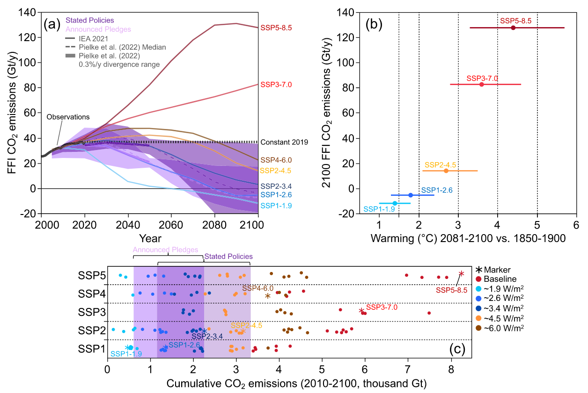Burgess et al. 2023
Use your imagination
Making and customizing beautiful and creative figures is much easier than it used to be
Don’t be constrained by the default way your personal research workflow generates plots
Example: simple but effective
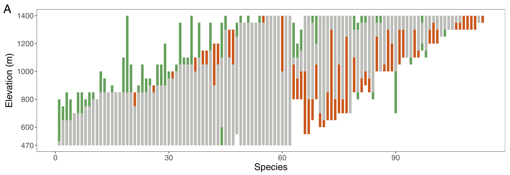Freeman et al. 2018
Plot types
Work backward from what you want to communicate
Some key questions to ask yourself:
- What quantities do you want to visualize – absolute values, relative values, grouped values, etc.?
- What summary statistics (e.g., means, trends) do you want to emphasize? How can you do this while still plotting the raw data?
- Do you need to plot your data over space? If so, does a map or an abstraction of space work better?
- Do you need to plot your data over time?
- How will you visualize uncertainty or variation in your data?
Stay close to the data
Some journals require you to plot raw data
Be very hesitant about omitting outliers
Violin plots are the new box-and-whisker plots
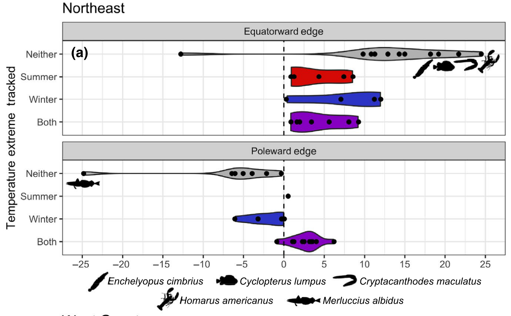Fredston et al. 2021
How do I match my idea to a figure?
Google is your friend, but you need to know how to describe what you’re looking for
For example, “best plot types for two continuous and one categorical variable”, or “how do I visualize relative change over time for many groups at once”
Try from data to viz
Example: “ridge” plots that show density by group
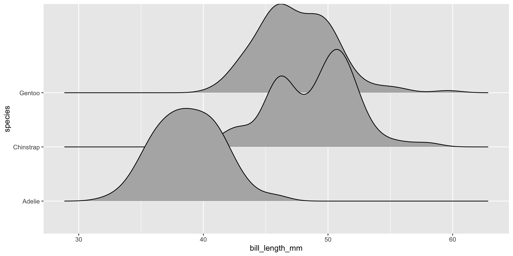Example: “ribbon” plots for uncertainty
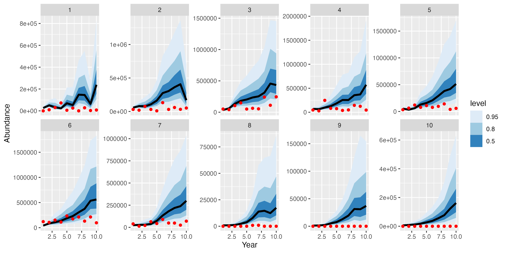Exploratory plot by Alexa
Example: “tile” plots that abstract space
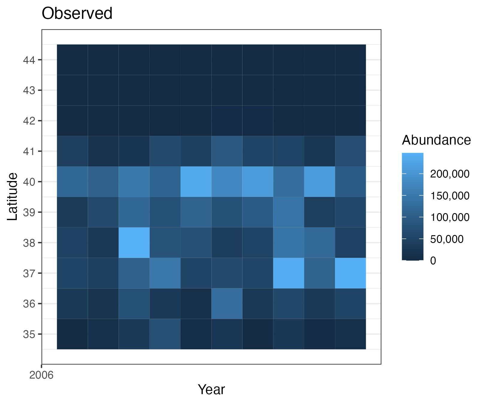Exploratory plot by Alexa
Conceptual figures
I am a huge fan of the conceptual diagram, which can summarize a huge amount of what you did in a simple, appealing format
Some ways to use them:
- Describing an experimental procedure
- Outlining a model workflow
- Summarizing a collaborative process
- Characterizing a complicated dataset
Example: conceptual diagram
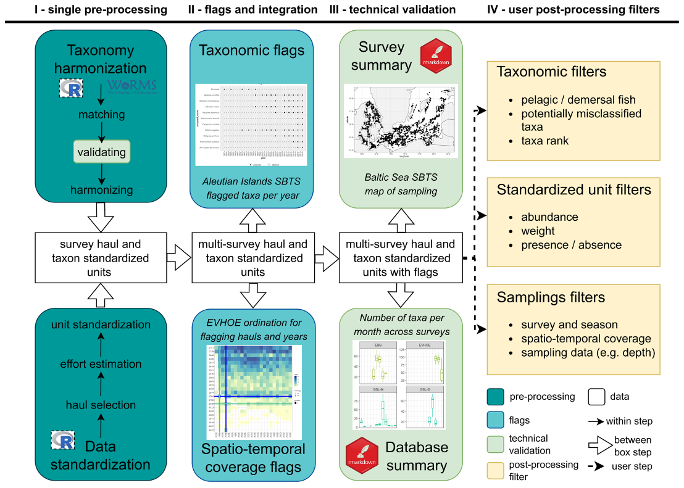Maureaud et al. 2024
Example: conceptual diagram
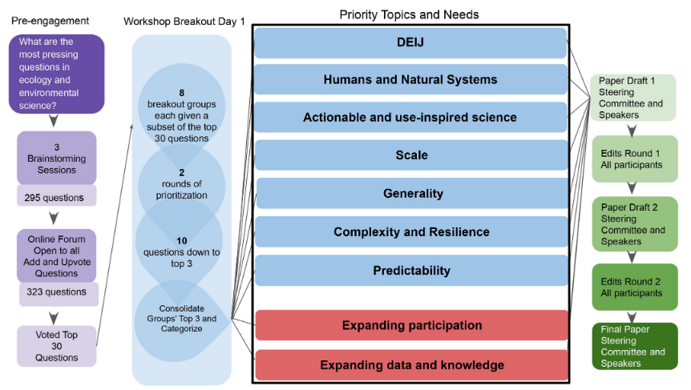Halpern et al. 2022
Example: conceptual diagram
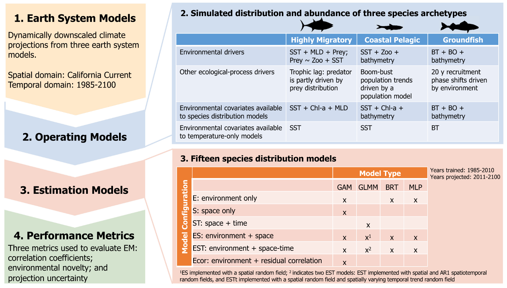Brodie et al. 2023
Annotation
Don’t hesitate to draw on and with your plots!
Remember that point size, shape, color, and shading can all communicate for you
You can plot icons from The Noun Project or biorender or silhouettes of taxa from phylopic
I often do this in a software called Inkscape (a little buggy on Macs though), which is also great for resizing figures to meet journal guidelines
Figure captions
Should be as short and straightforward as possible while still explaining everything in the figure
Try to avoid acronyms and jargon. The more intuitively you design your figure, the less you need to explain here
Do not make readers hunt through your manuscript to find explanations of things being plotted that are not in the figure caption!!
If your figure caption is getting incredibly long that is a sign your figure may need editing
Maps: additional considerations
What to plot depends on what you want the viewer to take away – could be bathymetry, country boundaries, major roads or rivers, model outputs… but don’t try to put more than one or two of these on the same map
Choose your projection to align with the areas you want to be most visible
Do not assume people know where your study region is; consider including a zoomed-out map situating it on the continent/globe
Be aware it is extremely difficult to plot uncertainty on a map. People often plot multiple maps side-by-side to get around this
Example: study areas
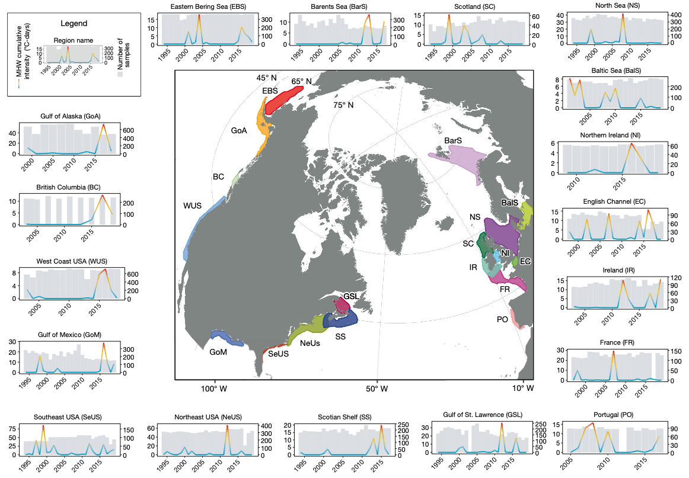Fredston et al. 2023
Example: heatmaps (“chloropleths”)
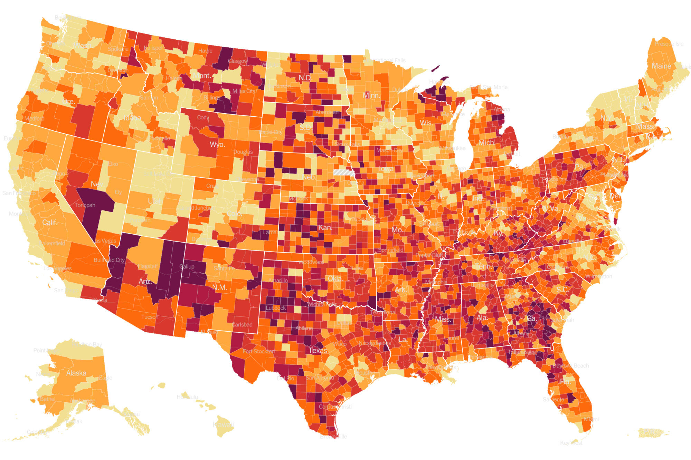New York Times
Color choices
Use color only when you need color; remember people will often print papers in black and white
You can find color palettes or ramps online and copy over their IDs (look for “hex” or “RGB” codes)
Match colors to your variable types:
- Continuous variables –> continuous color gradients
- Ordered variables –> discrete color gradients
- Categorical variables –> discrete color palettes
Make your plots colorblind-friendly. Somewhere between 5-10% of the general population has some limitation to their color vision. This site has some great palettes for continuous and categorical data that are colorblind-friendly, and you can read a simple explainer here.
Use colorbrewer to explore color choices, especially for maps
Matching scales to variables
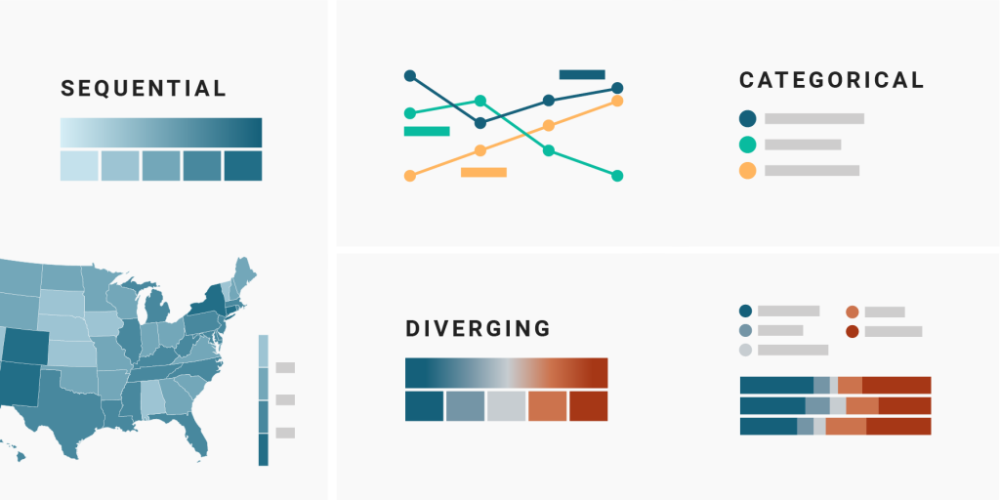From the Datawrapper blog
Example: Barbie plot
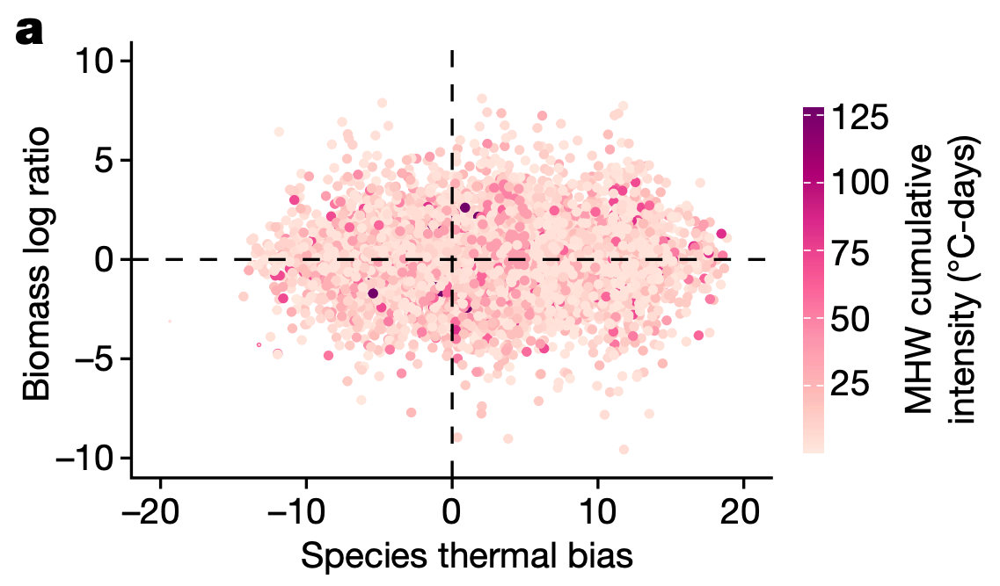Fredston et al. 2023
More on color choices
Be mindful of the interpretation of your colors. For example, red colors are often interpreted as literally hotter, and blues are often interpreted as literally colder; green colors are often used for vegetation or productivity
If you aren’t using a variable that is commonly associated with a color try to visualize it with a neutral color that won’t be confusing
Be consistent across plots and use the same colors for the same variables in all your figures
Example: color choices
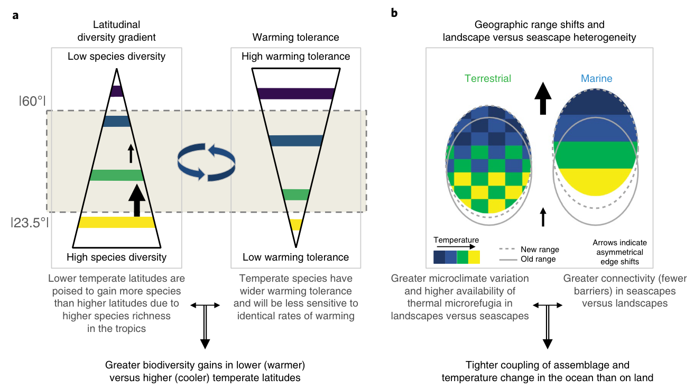Antão et al. 2020
Example: using color over two dimensions

Bivariate color ramp
Interactive plots, gifs, etc.
People increasingly make interactive plots to go with their papers; see Gavin Fay’s example
You can also generate gifs of your figures to embed in talks, which is really helpful for showing (for example) things evolving through time
You didn’t talk about tables
Tables in the main text of a paper can often be replaced by figures that show extra information, like variance in parameter values
However, sometimes tables and text boxes are important for summarizing descriptive information
I use them for reporting lots of p-values and models in supplementary information
Example: a table I begrudgingly made
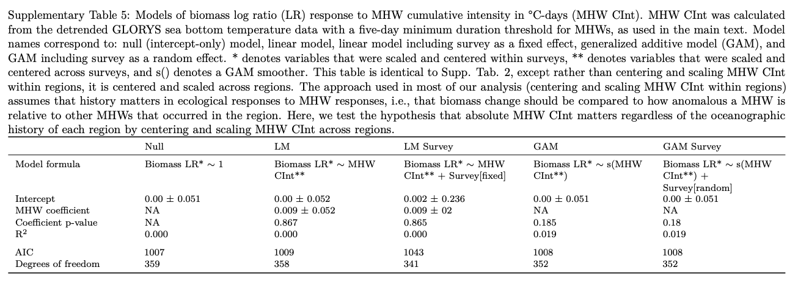Fredston et al. 2023
More resources for data visualization
Ten Simple Rules for Better Figures
Journal of Biogeography post, a reminder to always follow the journal guidelines
Betsy Mason article, full of examples of how scientists can make better visualizations
Claus Wilke’s book, a deep dive into data visualization
The Data Visualization Catalogue, for browsing plot options
Data Imaginist, on color theory